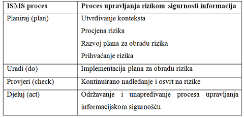
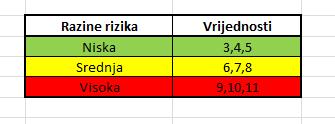
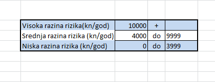
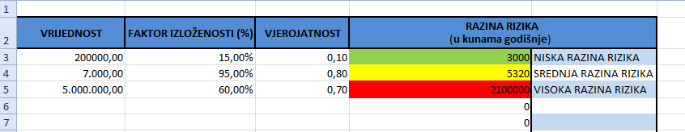
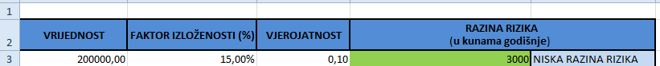

ISO 27005 - Upravljanje rizicima
TIM: Dario Šantalab, Ivan Vitez, Kristina Zjakić DOPRINOS: svaki član tima potpisom je označio dio na kojem je radio. Važna napomena: Kod izrade praktičnog dijela svi su članovi tima bili uključeni.
I. Reference
Sve informacije koje nisu posebno referencirane, preuzete su iz službenog dokumenta standarda International Standard ISO/IEC 27005, prvo izdanje, lipanj 2008.
II. Uvod
Neke organizacije raspolažu s nizom informacija i podataka koje su im ključne za poslovanje, ali istovremeno čine i osobne podatke njihovih klijenata. Zato je vrlo važno zaštititi te podatke. Za neke je organizacije zaštita takvih podataka ujedno i zakonska obveza.[5] To se očituje i u zakonima kao što su Zakon o tajnosti podataka i Zakon o zaštiti osobnih podataka. Potreba za sigurnošću informacija uvjetovana je i pravilnikom Hrvatske agencije za nadzor financijskih usluga (HANFA), kao npr. Politika informacijske sigurnosti, Primjerenost kontrola informacijske sigurnosti itd. Najbolje je koristiti standarde koji su globalno prihvaćeni.[5]
ISO/IEC 27005 dio je „obitelji“ ISO/IEC ISMS standarda, ISO/IEC 27000 serije. ISMS stoji kao kratica za sustav upravljanja sigurnošću informacija, odnosno Information Security Management System. Objavila ga je International Organization for Standardization (ISO) i International Electrotehnical Commission (IEC) u lipnju 2008. godine. Puni naziv je ISO/IEC 27005:2008 Information technology -- Security techniques -- Information security risk management.[1]
Svrha ove norme je dati osnovne upute i smjernice za upravljanje (menadžment) rizikom informacijske sigurnosti. Izdan je kao potpora generalnim konceptima standarda ISO/IEC 27001. Standard je primjenjiv na sve vrste organizacija koje žele upravljati rizikom informacijske sigurnosti.[2] Ne preporuča niti jednu konkretnu metodu za analizu rizika jer ona ovisi o mnoštvu faktora, ali objašnjava strukturiran i sistematičan proces od analiziranja rizika do kreiranja plana za kontrolu rizika.[1] Detaljno opisuje procjenu i obradu rizika.[3] Unutar okvira ovog standarda može se koristiti nekoliko postojećih metoda za implementaciju ISMS-a. Prepušteno je organizacijama da same odaberu svoj pristup upravljanju rizikom. Ovaj je standard bitan menadžerima i osoblju koji brinu za sigurnost informacija ili vanjskim suradnicima koji imaju tu ulogu.[4]
Kristina Zjakić 19:16, 28. prosinca 2011. (CET)
III. O standardu
Standard 27005 sastoji se od 55 stranica. Sadržaj standarda je sljedeći:[2]
- Predgovor
- Uvod
- Normativne reference
- Pojmovi i definicije
- Struktura
- Pozadina
- Pregled ISRM procesa
- Utvrđivanje konteksta
- Procjena rizika informacijske sigurnosti
- Obrada rizika informacijske sigurnosti
- Prihvaćanje rizika informacijske sigurnosti
- Komunikacija pri riziku informacijske sigurnosti
- Praćenje i pregled rizika informacijske sigurnosti
- Dodatak A: Definiranje djelokruga procesa
- Dodatak B: Vrednovanje imovine i procjena utjecaja
- Dodatak D: Slabosti i metode procjene slabosti
- Dodatak E: ISRA pristupi
Standard sadrži opis procesa upravljanja rizikom informacijske sigurnosti i aktivnosti tog procesa. Sustavni pristup menadžmentu rizika informacijske sigurnosti nužan je za identificiranje organizacijskih potreba po pitanju informacijske sigurnosti i kako bi se kreirao učinkovit sustav upravljanja sigurnošću informacija (ISMS). Ovaj pristup trebao bi biti prikladan organizacijskom okruženju i usklađen s ukupnim upravljanjem poslovnim rizicima. Sigurnosne mjere trebale bi utjecati na rizike efektivno, tamo gdje su potrebne i kada su potrebne.
Upravljanje rizikom sigurnosti informacijskog sustava treba biti sastavni dio svih sigurosnih aktivnosti, te treba biti primjenjen kako na implementaciju, tako i tekuće operacije ISMS-a. Upravljanje rizikom informacijske sigurnosti trebao bi biti kontinuirani proces, te bi trebao utvrditi kontekst i procijeniti rizike. Također treba i obraditi rizike korištenjem plana kojim će se implementirati preporuke i odluke. Upravljanje rizikom analizira što se može dogoditi i koje su moguće posljedice, prije nego odluči što treba činiti i kada kako bi smanjio rizik do prihvatljive razine.
Upravljanje rizikom informacijske sigurnosti treba pridonijeti:
- identificiranju rizika
- procjeni rizika u smislu njihovih posljedica za poslovanje i vjerojatnost njihova pojavljivanja
- vjerojatnosti da rizici budu shvaćeni i da se o njima komunicira
- određivanju prioriteta za obradu rizika
- prioritetu akcija koje reduciraju nastanak rizika
- da dionici budu uključeni u donošenje odluka vezanih za upravljanje rizicima, te da budu informirani o statusu upravljanja rizikom
- učinkovitost nadgledanja obrade rizika
- redovitom nadgledanju i osvrtu na rizike i procese upravljanja rizikom
- pribavljanju informacija za unapređivanje pristupa upravljanja rizikom
- edukaciji menadžera i osoblja o rizicima i akcijama koje su poduzete da bi ih se umanjilo.
Proces upravljanja rizicima sigurnosti informacija može se primijeniti na cijelu organizaciju, određeni dio organizacije (određeni odjel, lokaciju, pojedine usluge i sl.), na neki informacijski sustav, ili određene aspekte kontrole.
Kristina Zjakić 19:16, 28. prosinca 2011. (CET)
IV. Pregled procesa upravljanja rizikom informacijske sigurnosti
Proces upravljanja rizicima sigurnosti informacija sastoji se od utvrđivanja konteksta, procjene rizika informacijske sigurnosti, obrade rizika informacijske sigurnosti, prihvaćanja rizika informacijske sigurnosti, komunikacije pri riziku informacijske sigurnosti, praćenja rizika i osvrta na rizike informacijske sigurnosti.
{kind=link}
Slika 4.1. Proces upravljanja rizikom informacijske sigurnosti
Kao što vidimo na slici 4.1. proces se može ponavljati za aktivnosti procjene i/ili obrade rizika. Iterativni pristip provođenja procjene rizika može povećati dubinu i pojedinosti procjene u svakoj iteraciji. Iteracija također osigurava dobru ravnotežu između smanjenja vremena i truda uloženog u identificiranje kontrola, a da pritom i dalje osigurava odgovarajuću procjenu visokih rizika.
Kontekst se utvrđuje prvi. Nakon toga se provodi procjena rizika. Ako to daje dovoljno informacija da bi se uspješno odredilo akcije potrebne za modificiranje rizika na prihvatljivu razinu, tada je zadatak završen i slijedi obrada rizika. Ako nema dosta informacija, ponavlja se procjena rizika s izmjenjenim kontekstom (npr. kriterij evaluacije rizika, kriterij prihvatljivosti rizika ili kriterij udara). Učinkovitost rizika obrade ovosi o rezultatima procjene rizika. Moguće je da obrada rizika neće odmah dovesti rizik na prihvatljivu razinu, pa se u tom slučaju još jednom ponavlja procjena rizika s ponovno promjenjenim parametrima konteksta. Nakon toga slijedi daljnja obrada rizika.
Aktivnost prihvaćanja rizika mora osigurati da je ostatak rizika izričito prihvaćen od strane menadžera organizacije. Tijekom cijelog procesa važno je da se informacije o rizicima i njihovoj obradi prenose odgovarajućim menadžerima i operativnom osoblju. Čak i prije obrade rizika, informacije o identificiranim rizicima mogu biti vrlo važne za upravljanje incidentima i mogu pomoći u reduciranju potencijane štete. Svijest menadžera i osoblja o riziku, priroda kontrola za umanjivanje rizika i područja interesa organizacije pomažu u suočavanju s incidentima i neočekivanim događajima na najučinkovitiji način. Detaljni rezultati svake aktivnosti ovog procesa treba dokumentirati.
ISO/IEC 27001 naglašava da bi kontrole implementirane unutar okvira, granica i konteksta ISMS-a trebale biti temeljene na riziku. Primjena procesa upravljanja rizikom informacijske sigurnosti može zadovoljiti taj zahtjev. Ovaj se proces na nekoliko načina može uspješno implementirati u organizacije. Najbolje je da organizacije koriste za njih najpovoljniji način, koji najbolje odgovara njihovim okolnostima za primjenu procesa.
U ISMS-u su utvrđivanje konteksta, procjena rizika, razvijanje plana obrade rizika i prihvaćanje rizika sve dijelovi „plan“ faze, odnosno faze planiranja. Nakon toga slijedi „do“ faza (uradi) u kojoj se akcije i kontrole potrebne za smanjenje rizika na prihvatljivu razinu provode prema planu obrade rizika. U fazi „check“ (provjeri) menadžeri će odrediti potrebu za revizijom procjene i obrade rizika s obzirom na incidente i promjene u okolnostima. U "act" fazi (djeluj) se izvode sve potrebne akcije, uključujući dodatne primjene procesa upravljanja rizicima. U tablici možemo vidjeti aktivnosti bitne u svakoj od četiri faze ISMS procesa.
Tablica 4.1. Aktivnosti u fazama ISMS procesa 
{kind=link}
Kristina Zjakić 19:16, 28. prosinca 2011. (CET)
V. Utvrđivanje konteksta
V.I. Opća razmatranja
ULAZ: Sve infromacije o organizaciji bitne za utvrđivanje konteksta upravljanja rizikom sigurnosti informacija. Akcija: Kontekst za upravljanje rizikom sigurnosti informacija bi trebao biti utvrđen, što uključuje postavljanje osnovnih kriterija potrebnih za upravljanje rizikom sigurnosti informacija, definiranje djelokruga i granica, te uspostavljanje odgovarajuće organizacije za upravljanje rizikom informacijske sigurnosti.
Vodič za implementaciju:
Bitno je odrediti svrhu upravljanja rizikom informacijske sigurnosti jer to utječe na ukupni proces, a posebno na utvrđivanje konteksta. Svrha može biti:
- Potpora ISMS-u
- Pravna usklađenost i dokazi „due diligence“
- Izrada plana kontinuiteta poslovanja
- Priprema plana za reakciju na incidente
- Opis zahtjeva informacijske sigurnosti prema proizvodima, uslugama ili mehanizmima
IZLAZ: Specifikacija osnovnih kriterija, djelokruga i granica, te organizacije za proces upravljanja rizikom informacijske sigurnosti.
V.II. Osnovni kriteriji
Ovisno o djelokrugu i ciljevima upravljanja rizicima, mogu se primijeniti različiti pristupi. Pristupi mogu biti drugačiji u svakoj iteraciji. Odgovarajući pristup upravljanju rizikom treba biti odabran ili razvijen na takav način da se odnosi na osnovne kriterije, kao što su kriterij procjene rizika, kriteriji utjecaja, kriteriji prihvaćanja rizika i sl. Osim toga, organizacija bi trebala procijeniti jesu li potrebna sredstva raspoloživa za:
- izvođenje procjena rizika i utvrđivanje plana za obradu rizika
- definiranje i provođenje politika i procedura, uključujući implementaciju odabranih kontrola
- kontrole nadzora
- nadzor procesa upravljanja rizikom informacijske sigurnosti
V.II.I. Kriterij evaluacije rizika
Kriteriji evaluacije rizika treba biti razvijen za ocjenjivanje rizika sigurnosti informacija u organizacij, s obzirom na:
- stratešku vrijednost poslovnih informacija
- kritičnost uključene informacijske imovine
- pravne i regulativne zahtjeve, te ugovorne obveze
- operativnu i poslovnu važnost dostupnosti, povjerljivosti i integriteta
- očekivanja i percepcije dionika, te negativne posljedice za goodwill i ugled.
Osim toga, kriteriji procjene rizika mogu se koristiti za određivanje prioriteta za obradu rizika.
V.II.II. Kriterij utjecaja
Kriterije utjecaja treba razvijati i sprecificirati u smislu stupnjeva oštećenja ili troška za organizaciju uzrokovanog nekim događajem vezanim za informacijsku sigurnost, s obzirom na:
- Razinu klasifikacije informacijske imovine koja je zahvaćena
- Povrede informacijske sigurnosti (npr. gubitak povjerljivosti, cjelovitosti i dostupnosti)
- Pogoršanje u poslovanju (unutrašnjem ili za treće osobe)
- Gubitak poslovne i financijske vrijednosti
- Poremećaj planova i rokova
- Šteta za ugled
- Povrede zakonskih, regulatornih ili ugovornih zahtjeva
V.II.III. Kriterij prihvaćanja rizika
Kriterij prihvaćanja rizika treba biti razvijen i specificiran. Kriterij prihvaćanja rizika često ovisi o organizacijskoj politici, ciljevima i interesima dionika. Organizacija treba definirati vlastite ljestvice za razine prihvaćanja rizika. Tijekom razvoja trebalo bi razmotriti sljedeće:
- Kriterij prihvaćanja rizika može uključivati više pragova, s ciljne razine rizika, ali uz dopuštanje da viši menadžeri prihvate rizik iznad ove razine pod određenim uvjetima
- Kriterij prihvaćanja rizika može se izraziti kao omjer procjenjene dobiti (ili neke druge poslovne koristi) i procjenjenog rizika
- Različiti kriteriji prihvaćanja rizika mogu se primijeniti na različite klase rizika, npr. rizik koji bi mogao mogao dovesti do neusklađenosti s propisima i zakonima ne može biti prihvaćen, ali se može dopustiti prihvaćanje visokog rizika koji je određen kao ugovorni uvjet)
- Kriterij prihvaćanja rizika može uključivati zahtjeve za buduću dodatnu obradu, npr. rizik može biti prihvaćen ako postoji odobrenje i obveza poduzimanja akcija da se rizik smanji na prihvatljivu razinu unutar definiranog vremenskog perioda.
Kriteriji prihvaćanja rizika mogu se razlikovati ovisno o tome koliko se dugo očekuje da će rizik postojati (privremeno, kratkoročno...). Kriterij prihvaćanja rizika treba postaviti s obzirom na:
- Poslovne kriterije
- Pravne i regulativne aspekte
- Poslovanje
- Tehnologiju
- Financije
- Društvene i humanitarne čimbenike
V.III. Djelokrug i granice
Organizacija treba definirati djelokrug i granice upravljanja rizicima informacijske sigurnosti. Djelokrug procesa upravljanja rizikom informacijske sigurnosti mora biti definiran kako bi osigurao da se sva bitna imovina uzima u obzir pri procjeni rizika. Osim toga, granice trebaju biti definirane za rješavanje i onih rizika koji bi mogli proizaći kroz te granice. Informacije o organizaciji trebaju biti prikupljene da bi se pomoću njih odredila okolina u kojoj organizacija posluje i njena važnost u procesu upravljanja rizikom sigurnosti informacija.
Pri definiranju djelokruga i granica, organizacija treba razmotriti sljedeće informacije:
- Strateški ciljevi poslovanja organizacije, strategije i politike
- Poslovni procesi
- Funkcija i struktura organizacije
- Pravni, regulativni i ugovorni zahtjevi koji se primjenjuju na organizaciju
- Organizacijska politika informacijske sigurnosti
- Cjelokupni pristup organizacije upravljanju rizikom
- Informacijska imovina
- Lokacije na kojima organizaicija posluje i geografska obilježja
- Ograničenja koja utječu na organizaciju
- Očekivanja dionika
- Društveno-kulturološko okruženje
- Sučelja (npr. razmjena informacija s okolinom)
Osim toga, organizacija bi trebala osigurati opravdanje za bilo koje isključenje iz djelokruga. Primjer djelokruga upravljanja rizikom može biti aplikacija IT-a, infrastruktura IT-a, poslovni proces ili određeni dio organizacije.
V.IV. Organizacija za upravljanje rizikom informacijske sigurnosti
Organizacija i odgovornosti za proces upravljanja rizikom informacijske sigurnosti trebaju biti postavljene i održavane. Sljedeće su glavne uloge i odgovornosti ovakve organizacije:
- Razvoj procesa upravljanja rizikom informacijske sigurnosti prikladnom za konkretnu organizaciju
- Identifikacija i analiza dionika
- Definicija uloga i odgovornosti svih sudionika, unutarnjih i vanjskih
- Uspostava potrebnih odnosa između organizacije i dionika, između sučelja i organizacijskih funkcija za upravljanje visokim rizicima (npr. upravljanje operativnim rizikom), kao i odnos sučelja prema drugim bitnim projektima ili aktivnostima
- Definiranje eskalacijskih puteva odluka
- Specifikacija evidencija koji se trebaju voditi.
Ova organizacija treba biti odobrena od strane odgovarajućeg voditelja organizacije.
Kristina Zjakić 19:16, 28. prosinca 2011. (CET)
VI. Procjena rizika informacijske sigurnosti [4]
ULAZ: osnovni kriterij, djelokrug i granice i organizacija za upravljanje rizikom informacijske sigurnosti treba biti uspostavljena.
AKCIJA: rizici trebaju biti identificirani, kvantitativno ili kvalitativno opisani i prioritetizirani prema kriteriju za procjenu rizika i ciljeva važnih za organizaciju.
Vodič za implementaciju:
Rizik je kombinacija posljedica koje bi proizašle iz pojave nepoželjnog događaja i vjerojatnosti same pojave događaja. Procjena rizika se sastoji od sljedećih aktivnosti:
- Analize rizika koja sadržava:
- Identifikaciju rizika
- Određivanje rizika
- Evaluacije rizika
Procjena rizika određuje vrijednost informacijske imovine, identificira moguće prijetnje i ranjivosti koje postoje ili bi mogle postojati, identificira postojeće kontrole i njihov efekt na identificiran rizik, određuje moguće posljedice i prioritetizira izvedene rizike i rangira ih prema kriteriju za evaluaciju rizika koji je definiran u kontekstu osnutka.
Procjena rizika se obično izvodi kroz 2 ili više iteracija. Na početku, procjena visoke važnosti se iznosi da bi se odredili potencijalni rizici visoke razine koji osiguravaju daljnju procjenu. Sljedeća iteracija može uključivati daljnju sveobuhvatno sagledavanje potencijalnih rizika visoke razine otkrivenih u inicijalnoj iteraciji. Ukoliko ove iteracije daju informacije nedovoljne za procjenu rizika, tada se provode daljnje detaljne analize unutar djelokruga i po mogućnosti sa drugom metodom. Na organizaciji je da odabere vlastiti pristup procjene rizika baziran na ciljevima i težnji evaluacije rizika.
IZLAZ: lista procijenjenih rizika prioritetiziranih prema kriteriju evaluacije rizika.
--Darsantal 22:46, 30. prosinca 2011. (CET)
VI.I. Analiza rizika
Uvod u identifikaciju rizika
Svrha identifikacije rizika je da se odredi što može izazvati potencijalni gubitak, i dobivanje uviđaja kako, gdje i zašto bi se taj gubitak dogodio.
--Darsantal 22:46, 30. prosinca 2011. (CET)
VI.I.I. Identifikacija imovine
ULAZ: djelokrug i granice za procjenu rizika trebaju biti vođene, lista komponenata i njihovih vlasnika, lokacija, funkcija i sl.
AKCIJA: Imovina unutar utvrđenih granica i djelokruga treba biti identificirana.
Vodič za implementaciju:
Imovina je sve što posjeduje vrijednost za organizaciju i zbog toga mora biti zaštićena. Za identifikaciju imovine treba imati na umu da se informacijski sustav sastoji od više komponenata, a ne samo od hardvera i softvera. Identifikacija imovine treba biti vođena na prikladnoj razini detalja koja pruža informacije dovoljne za procjenu rizika. Razina detalja korištena za identifikaciju imovine ima utjecaj na sveukupnu količinu informacija prikupljenu za vrijeme procjene rizika. Razina može biti poboljšana u daljnjim iteracijama procjene rizika. Vlasnik imovine treba biti identificiran za svaki dio imovine da bi se odredila dužnost i odgovornost za imovinu. Vlasnik imovine ne mora imati prava posjedovanja imovine, ali ima odgovornost za njezinu proizvodnju, razvoj, održavanje, korištenje i zaštitu na odgovarajući način. Vlasnik imovine je prikladna osoba za određivanje vrijednosti imovine za organizaciju. Pregled granica je djelokrug imovine organizacije definiran na način da bi bio vođen procesom upravljanja rizikom sigurnosti informacija.
IZLAZ: imovina koja će biti upravljana rizikom, lista procesa vezanih uz imovinu i njihovu važnost za organizaciju.
--Darsantal 22:46, 30. prosinca 2011. (CET)
VI.I.II. Identifikacija prijetnji
ULAZ: informacije o prijetnjama dobivene iz pregleda rizika, vlasnika imovine, korisnika i ostalih izvora uključujući i vanjske kataloge prijetnji.
AKCIJA:prijetnje i izvori prijetnji trebaju biti identificirani.
Vodič za implementaciju:
Prijetnja ima potencijal naštetiti imovini kao što su informacije, procesi i sustavi i zbog toga i organizaciji. Prijetnje mogu biti prirodne ili ljudske i mogu biti slučajne ili namjerne. Za namjerne ili slučajne prijetnje izvor treba biti identificiran. Prijetnja može biti izazvana unutar ili van organizacije. Prijetnje trebaju biti identificirane općenito i po tipu (neovlašten pristup, fizička šteta, tehnički kvar) i gdje je prikladno, individualne prijetnje unutar generičke klase trebaju biti identificirane. To znači da nijedna prijetnja nije zanemarena, uključujući i neočekivane, ali djelokrug rada je ograničen. Neke prijetnje mogu utjecati na više imovina. U takvim slučajevima mogu uzrokovati različite učinke ovisno o imovini na koju utječu. Ulazi za identifikaciju prijetnji i procjenu vjerojatnosti nastanka mogu se dobiti iz imovine vlasnika ili korisnika, od strane ljudskog osoblja, od stručnjaka iz objekata za upravljanje i sigurnosti informacija, fizičkih stručnjaka, pravnog odjela i drugih organizacija uključujući i pravna tijela, vremenske vlasti, osiguravajuća društva i nacionalne vlasti. Aspekti okoliša i kulture mora biti uzeti u obzir za vrijeme adresiranja prijetnji. Unutarnja iskustva o incidentima i prošlim procjenama prijetnji trebaju biti uzete u obzir i u trenutnoj procjeni. Od pomoći je i konzultiranje ostalih kataloga prijetnji (možda specifičnih za organizaciju ili posao) za kompletiranje liste generičkih prijetnji, gdje je to potrebno. Katalozi prijetnji i statistike su dostupne od strane tijela industrije, nacionalne vlasti, legalnih tijela, osiguravajućih društava i sl. Kod korištenja kataloga prijetnji ili rezultata prijašnjih procjena prijetnji, treba biti svjestan da postoje promjene relevantnih prijetnji, osobito ako se poslovni okoliš ili informacijski sustavi promijene.
IZLAZ: lista prijetnji sa identificiranim tipovima prijetnji i njihovim izvorima.
--Darsantal 22:46, 30. prosinca 2011. (CET)
VI.I.III. Identifikacija postojećih kontroli
ULAZ: dokumentacija kontroli i implementacijskih planova za obradu rizika.
AKCIJA: postojeće i planirane kontrole trebaju biti identificirane.
Vodič za implementaciju:
Identifikacija postojećih kontroli treba biti provedena radi izbjegavanja nepotrebnog posla ili troškova. Kod identificiranja postojećih kontrola provjera treba biti izvedena da bi se osigurao ispravan rad kontrole - referenca su već postojeća ISMS revizijska izvješća koja bi trebala ograničiti prošireno vrijeme za ovaj zadatak. Ako kontrola ne radi onako kako se od nje očekuje, može izazvati ranjivosti. Razmatrati treba situaciju gdje odabrana kontrola ili strategija ne uspije u operaciji i zbog toga su potrebne dodatne kontrole da bi adresirao rizik. U ISMS-u, prema ISO 27001 normi, to je podržano mjerenjem efektivnosti kontrola. Način za procjenu kontrole potreban je radi dobivanja uvida u smanjenje vjerojatnosti prijetnji i lakoće podviga ranjivosti ili učinka incidenta. Recenzije upravljanja i revizijska izvješća daju informacije o efektivnosti postojećih kontrola. Kontrole koje su planirane za implementaciju prema planovima za obradu rizika trebaju biti uzete u obzir kao i one koje su već implementirane. Postojeća ili planirana kontrola može biti identificirana kao neefektivna, nedovoljna ili neopravdana. Ako nije opravdana ili je nedovoljna, kontrola treba biti provjerena kako bi se ili uklonila, zamijenila drugom prikladnijom kontrolom ili bi trebala ostati iz npr. troškovnih razloga. Za identifikaciju postojećih ili planiranih kontrola, sljedeće aktivnosti su od pomoći:
- Pregled dokumenata koji sadrže podatke o kontrolama. Ako su procesi upravljanja informacijskom sigurnošću dobro dokumentirani, sve postojeće ili planirane kontrole i njihov implementacijski status trebaju biti dostupni,
- Provjera sa ljudima odgovornima za informacijsku sigurnost i korisnicima gdje su kontrole stvarno implementirane za informacijski proces ili informacijski sustav koji su uzeti u obzir,
- Provođenje na licu mjesta fizičkih kontroli i usporedba onih implementiranih sa listom onih koje bi trebale biti implementirane i provjera da li implementirane rade učinkovito i ispravno ili pregled rezultata unutarnje revizije.
IZLAZ: Popis svih postojećih i planiranih kontrola, njihovih primjena i status korištenja.
--Darsantal 22:46, 30. prosinca 2011. (CET)
VI.I.IV. Identifikacija ranjivosti
ULAZ: lista poznatih prijetnji, popis imovine i postojećih kontrola.
AKCIJA: ranjivosti koje mogu biti iskorištene od strane prijetnji da naprave štetu imovine ili organizaciji trebaju biti identificirane.
Vodič za implementaciju:
Ranjivosti mogu biti identificirane u sljedećim područjima:
- Organizaciji,
- Procesima i procedurama,
- Rutinama upravljanja,
- Osoblju,
- Fizičkom okolišu;
- Konfiguraciji IS-a,
- Hardveru, softveru ili komunikacijskoj opremi,
- Ovisnosti o vanjskim strankama
Prisutnost ranjivosti ne izaziva štetu samo od sebe, budući da je potrebna prijetnja da bi ju iskoristila. Ranjivost koja nema odgovarajuću prijetnju ne zahtjeva implementaciju kontrole, ali bi trebala biti prepoznata i praćena radi promjena. Treba biti zabilježeno da nekorektno implementirana ili neispravna kontrola ili kontrola koja se koristi nekorektno može postati ranjivost. Kontrola može biti efektivna ili neefektivna ovisno o okolišu u kojem se izvodi. S druge strane, prijetnja koja nema odgovarajuće ranjivosti ne može biti rizična. Ranjivosti mogu biti povezane sa svojstvima imovine koje se mogu koristiti na način ili u neku svrhu drugačije negoli namjeravanu kad je imovina kupljena ili stvorena. Ranjivosti koje proizlaze iz različitih izvora trebaju biti uzete u obzir, kao npr., one unutarnje ili vanjske.
IZLAZ: popis ranjivosti povezanih sa imovinom, prijetnji i kontrola; popis ranjivosti koje se ne odnose na bilo kakve utvrđene prijetnje za pregled.
--Darsantal 22:46, 30. prosinca 2011. (CET)
VI.I.V. Identifikacija posljedica
ULAZ: popis imovine, poslovnih procesa, popis prijetnji i ranjivosti, gdje je prikladno, vezanih uz imovinu i njihova važnost.
AKCIJA: posljedice gubitka povjerljivosti, integriteta i dostupnosti trebaju biti identificirani.
Vodič za implementaciju:
Posljedica može biti gubitak efektivnosti, nepovoljnih uvjeta poslovanja, gubitak poslovanja, ugleda, štete i sl. Ova aktivnost identificira štetu ili posljedice za organizaciju koja bi mogla biti uzrokovana scenarijem incidenta. Scenarij incidenta je opis prijetnji koje iskorištavaju određenu ranjivost ili skup ranjivosti u incidentu informacijske sigurnosti. Utjecaj scenarija incidenta se određuje na temelju kriterija utjecaja definiranog u kontekstu. Može utjecati na više imovina ili dijelova imovine. Ta imovina može imati dodijeljenu vrijednost u financijskom trošku i poslovnim posljedicama ukoliko je imovina oštećena ili ugrožena. Posljedice mogu biti privremene naravi i mogu biti stalne, kao u slučaju uništenja imovine. Organizacije trebaju utvrditi operativne posljedice incidenta scenarija u smislu:
- Istrage i vremena popravka,
- Gubitka radnog vremena,
- Gubitka prilike,
- Zdravlja i sigurnosti,
- Financijskog troška specifičnih vještina za popravak štete,
- Ugleda i dobre volje.
IZLAZ: popis scenarija incidenata sa njihovim posljedicama vezanih uz imovinu i poslovne procese.
--Darsantal 22:46, 30. prosinca 2011. (CET)
VI.II. Ocjenjivanje rizika
Metodologije ocjenjivanja rizika
Analiza rizika može se poduzeti u različitim stupnjevima detalja, ovisno o kritičnosti imovine, djelokrugu poznatih ranjivosti, prijašnjih incidenata u organizaciji .Metodologija procjene može biti kvalitativna ili kvantitativna, ili kombinacija istih, ovisno o okolnostima. U praksi, kvalitativna procjena se često koristi prva za dobivanje općih pokazatelja stupnjeva rizika i da bi se otkrili rizici visoke razine. Kasnije se poduzimaju više specifične ili kvantitativne analize za rizike visokog stupnja, jer su obično jednostavnije i jeftinije nego kvalitativne analize. Oblik analize treba biti u skladu s kriterijima za ocjenjivanje rizika razvijenog u kontekstu.
--Darsantal 22:46, 30. prosinca 2011. (CET)
VI.II.I. Kvalitativna procjena (Praktični dio)
Kvalitativna procjena koristi ljestvice kvalificiranih atributa za opisivanje veličine potencijalnih posljedica (npr. niske, srednje i visoke) i vjerojatnost da će se te posljedice pojaviti. Prednost kvalitativne procjene je njezina jednostavnost razumijevanja od strane relevantnog osoblja, dok je nedostatak ovisnost o subjektivnom izboru ljestvica. Ove ljestvice se mogu adaptirati ili prilagoditi tako da odgovaraju okolnostima i različitim opisima za različite rizike.
Kvalitativna procjena može se koristiti:
- Kao početna aktivnost probiranja za prepoznavanje rizika koji zahtijevaju podrobniju analizu,
- Gdje je ova vrsta analize prikladna za donošenje odluka,
- Gdje su numerički podaci ili resursi nedostatni za kvantitativnu procjenu.
Kvalitativna analiza bi trebala koristiti činjenične informacije i podatke gdje je to moguće.
--Darsantal 22:46, 30. prosinca 2011. (CET) --ivitez 14:43, 5. siječnja 2012. (CET) Kristina Zjakić 16:27, 5. siječnja 2012. (CET)
Primjer kvalitativne procjene (zajedno izradili)
Metoda matrice predefiniranih vrijednosti koristi tri parametra:
- Vrijednost resursa (Asset Value) - AV
- Prijetnje (Threat) - T
- Ranjivosti (Vulnerability) - V
„Svaki od tih parametara promatra se u odnosu na moguće posljedice, dok se prijetnje promatraju u odnosu na odgovarajuće ranjivosti V.„ [6]
Svi parametri se kvantificiraju proizvoljno prema vlastitim procjenama. [6]
Za određivanje vrijednosti resursa koriste se numeričke vrijednosti u rasponu od 1 (mala) do 5 (vrlo velika) [6]
Za kvantifikaciju ranjivosti i prijetnji koristi se raspon od 1 (niska razina) do 3 (visoka razina). [6]
Formula za izračun: R = AV +V +T [6]
Sljedeća slika prikazuje razine. Razine 3,4,5 su niske razine. Razine 6,7,8 su srednje razine, a razine 9,10,11 su visoke razine. Niske razine označavaju one posljedice koje nemaju veliki utjecaj na organizaciju, ali ih nije potrebno zanemariti. Srednje razine prikazuju one razine koje bi mogle predstavljati malo veću opasnost za organizaciju, dok visoke razine su one razine koje mogu biti pogubne za organizaciju. Svaka od razina treba biti shvaćena ozbiljno od strane organizacije. Slike i izračuni su napravljeni u MS Excel-u.

Slika 6.2.1a Prikaz razina rizika za izračun rizika.
{kind=link}
{kind=link}
Slika 6.2.1b Prikaz tablice za izračun rizika --Darsantal 22:23, 30. prosinca 2011. (CET)--ivitez 14:43, 5. siječnja 2012. (CET) Kristina Zjakić 16:29, 5. siječnja 2012. (CET)
Sljedeća tablica prikazuje razine rizika: odredi se nekoliko razreda rizika i odlučuje što će se poduzeti, ali u okvirima organizacije (da je organizaciji prihvatljivo). Na sljedećoj slici biti će prikazan utjecaj posljedica i vjerojatnost incidenta scenarija koji bi se mogao dogoditi te će sve biti označeno bojama koje prikazuju kako određene posljedice utječu na organizaciju i kolika je vjerojatnost da se neki incident dogodi te koliko je to bitno za organizaciju.
{kind=link}
Slika 6.2.1c Razine rizika i klasifikacija po bitnosti svakog incidenta i posljedice za organizaciju.
Prihvaćanje rizika --Darsantal 22:23, 30. prosinca 2011. (CET) --ivitez 14:43, 5. siječnja 2012. (CET) Kristina Zjakić 16:29, 5. siječnja 2012. (CET)
- Niska razina: 3-5 (vrijednosti od 3 do 5)
- Srednja razina: 6-8 (vrijednosti od 6 do 8)
- Visoka razina: 9-11 (vrijednosti od 9 do 11)
Vrijednosti dobivene izračunom izgledaju kao na sljedećoj slici.
{kind=link}
Slika 6.2.1d Prikaz dobivenih vrijednosti za određene slučajeve
--Darsantal 22:46, 30. prosinca 2011. (CET) --ivitez 14:43, 5. siječnja 2012. (CET) Kristina Zjakić 16:29, 5. siječnja 2012. (CET)
Primjer 1
U poduzeću XY, resurs A ima procijenjenu vrijednost 3, ako mu je prijetnja procijenjena na 1 (primjer: nestanak struje, a naše poduzeće ima benzinski generator, tada nam gubitak struje ne predstavlja veliku prijetnju), ali je poduzeće ranjivo (razina 2) iz razloga što nemamo neograničene zalihe benzina, te je stoga razina rizika jednaka:
R=AV+T+V=3+1+2=6
Izračunom iz tablice dobili smo rezultat 6. isti rezultat je dobiven izračunom u alatu MS Excel i ti je prikazano na slici 6.2.1e
{kind=link}
Slika 6.2.1e Izračun u MS Excel-u
Izračunom je dobivena razina 6 koja se uvrštava u srednje razine rizika i ove razine su po bitnosti srednje što znači da ukoliko nema bitnijih razina rizika da organizacija može obrađivati ovu razinu rizika. --Darsantal 22:46, 30. prosinca 2011. (CET)
Primjer 2
U poduzeću se na serveru 3 nalaze osobni podaci klijenata tvrtke, što je vrlo bitno za poslovanje, a ujedno je i poslovna tajna. Iz tog razloga vrijednost resursa je na visokoj razini (razina 5). Iako je poduzeće poduzelo sve mjere zaštite servera, nemože se zaštititi od ekstremnih elementarnih nepogoda (potres, požar, tsunami) pa su stoga prijetnja i ranjivost na najvišoj razini ( razina 3).
R=AV+T+V=5+3+3=11
Dobivena vrijednost 11 predstavlja visoku razinu rizika za organizaciju i tvrtka se mora odmah baciti na rješavanje ove razine
{kind=link}
Slika 6.2.1f Izračun u MS Excel-u
--Darsantal 22:46, 30. prosinca 2011. (CET) --ivitez 14:43, 5. siječnja 2012. (CET) Kristina Zjakić 16:27, 5. siječnja 2012. (CET)
VI.II.II. Kvantitativna procjena (Praktični dio)
Kvantitativna procjena koristi ljestvice sa numeričkim vrijednostima (a ne opisne kao kod kvalitativne procjene) i za posljedice i za vjerojatnost, koristeći podatke iz različitih izvora. Kvaliteta analize ovisi o točnosti i potpunosti brojčanih vrijednosti i valjanosti modela koji se koriste. Kvantitativna procjena u većini slučajeva koristi povijesne podatke incidenata, pod uvjetom da je prednost da se može izravno odnositi na ciljeve informacijske sigurnosti i brige organizacije. Nedostatak je taj što nema takvih podataka o novim rizicima ili slabostima informacijske sigurnosti. Glavni nedostatak kvantitativnog pristupa je tamo gdje činjenični podaci nisu dostupni i na taj način se stvara privid vrijednosti i točnosti procjene rizika. Način na koji posljedice i vjerojatnost su izraženi i načini gdje su kombinirani da bi osigurati razinu rizika se razlikuje ovisno o vrsti rizika i svrsi za koju su procjene rizika korištene. Nesigurnost i varijabilnost i posljedica i vjerojatnosti trebaju biti uzete u obzir i priopćene efektivno.
--Darsantal 22:46, 30. prosinca 2011. (CET) --ivitez 14:44, 5. siječnja 2012. (CET) Kristina Zjakić 22:21, 5. siječnja 2012. (CET)
Primjer kvantitativne procjene (zajedno izradili) Pojašnjenje sljedećeg primjera!
U sljedećem primjeru vrijednost imovine je uzeta iz računovodstva, ali se ovisno o iskustvu i znanju može promijeniti. Postotak (15%) je procjenjen na temelju iskustva i znanja procjenitelja, a 0.1 je vjerojatnost dobivena iz statističkih podataka (za to nam je važno dokumentiranje, a ako nemamo vlastitih prethodnih podataka, osvrnut ćemo se na podatke organizacije čije je poslovanje slično našem). Ukoliko podatak nije evidentiran u računovodstvu, tada se vrijednost imovine procjenjuje na temelju znanja i iskustva procjenitelja.
U našem primjeru razine rizika su kvantificirane na sljedeći način kao na slici 6.2.2a
 Slika 6.2.2a Razine rizika za našu tvrtku.
{kind=link}
Slika 6.2.2b prikazuje vrijednosti izračunate za svaku razinu rizika.

Slika 6.2.2b Izračunate vrijednosti za svaku razinu rizika.
{kind=link}
--Darsantal 22:46, 30. prosinca 2011. (CET) --ivitez 14:44, 5. siječnja 2012. (CET) Kristina Zjakić 22:21, 5. siječnja 2012. (CET)
Primjer 1 Na primjeru poduzeća XY, ima vrijednost resursa A čija je vrijednost 200 000 kn, faktor, izloženosti od 15% i vjerojatnost od 0,1 u godinu dana, uvrstimo u formulu:
R = AV ∙ EF(I,V,T) ∙ P(V,T)
R =200 000 ∙ 15/100 ∙ 0.1 = 3000 kn/god
U alatu MS Excel dobio se sljedeći rezultat.
 Slika6.2.2c Izračunata vrijednost primjera u alatu MS Excel
{kind=link}
Izračunom je utvrđeno da je ova razina rizika niska i ukoliko nema visokih i srednjih razina rizika za organizaciju, može se krenuti u rješavanje ove razine.
- Faktor izloženosti (Exposure Factor)– EF
- Procijenjena vrijednost resursa (Asset Value) – AV
- Ranjivost (Vulnerability) – V
- Prijetnja (Threat) – T
- Vjerojatnost (Probability) –P
- Posljedice (Impact) - I
Pozitivna stvar u ovom pristupu je što se na kraju analize dobiju konkretne vrijednosti izražene u novcu.
Ali, ovaj pristup nije primjeren iz više razloga:
- „Novčana vrijednost resursa obično se određuje na temelju knjigovodstvene vrijednosti” [6]
- Problem određivanja faktora izloženosti informatičkog sustava - u većini slučajeva praktički nemoguće odrediti. [6]
- Određivanje vjerojatnosti - teško odrediti čak i u slučajevima gdje se mogu pronaći statistički podaci. [6]
„Na osnovi spomenutih činjenica može se zaključiti da kvantitativan pristup u procjeni rizika nije prikladan, jer egzaktne numeričke vrijednosti dobivene kao rezultat procjene rizika nisu pouzdane zbog nepouzdanosti svih parametara koji se koriste za izračun.” [6]
--Darsantal 22:46, 30. prosinca 2011. (CET) --ivitez 14:44, 5. siječnja 2012. (CET) Kristina Zjakić 22:21, 5. siječnja 2012. (CET)
VI.II.III. Određivanje posljedica
ULAZ: popis identificiranih relevantnih scenarija incidenata, uključujući identifikaciju prijetnji, ranjivosti, pogođenu imovinu, posljedice na imovinu i poslovnih procesa.
AKCIJA: poslovni utjecaj na organizaciju koji bi mogao proizaći iz moguće ili stvarne informacije sigurnosnih incidenata trebaju biti ocjenjivani, uzimajući u obzir posljedice prodora u sigurnost informacija kao što su gubitak povjerljivosti, cjelovitosti ili raspoloživosti imovine.
Vodič za implementaciju:
Nakon utvrđivanja imovine, vrijednost dodijeljena toj imovini treba uzeti u obzir, za vrijeme procjene posljedica. Vrijednost poslovnog utjecaja može se izraziti u kvalitativnom i kvantitativnom obliku, ali bilo koji način dodjeljivanja novčane vrijednosti općenito može dati više informacija za donošenje odluka, a time i olakšati proces donošenja odluka. Vrednovanje imovine počinje podjelom imovine u skladu sa njezinom kritičnosti, u smislu važnosti imovine za ispunjavanje poslovnih ciljeva organizacije. Vrednovanje se određuje pomoću dvije metode:
- zamjenska vrijednost imovine: troškovi oporavka i zamjene informacija (ako je to uopće moguće),
- poslovne posljedice gubitka ili ugrožavanja imovine, kao što su potencijalni štetni posao i / ili pravne ili regulatorne posljedice od otkrivanja, modifikacije, ne-dostupnost i / ili uništavanje informacija i ostale imovine.
Ova procjena može se odrediti iz analize poslovnog utjecaja. Vrijednost, određena na temelju posljedica za poslovanje, obično je znatno veća od jednostavne zamjene troškova, ovisno o važnosti imovine za organizaciju u ispunjavanju svojih poslovnih ciljeva. Procjena imovine je ključni čimbenik u ocjenjivanju utjecaja scenarija incidenta jer incident može utjecati na više od jedne imovine (npr. ovisne imovine), ili samo dio imovine. Različite prijetnje i ranjivosti će imati različite utjecaje na imovinu, kao što su gubitak povjerljivosti, integriteta ili dostupnosti. Procjena posljedica je na taj način povezana sa procjenom vrijednosti imovine na analizi poslovnih utjecaja. Posljedice ili poslovni učinak može se odrediti modeliranjem ishoda događaja ili skupa događaja, ili ekstrapolacije od eksperimentalnih studija ili prošlih podataka. Posljedice mogu biti izražene smislu monetarnih, tehničkih ili ljudskih kriterija utjecaja ili drugim kriterijima relevantnima za organizaciju. U nekim slučajevima, više od jedne numeričke vrijednosti je potrebno odrediti za određivanje posljedica u različitim vremenima, mjestima, grupama ili situacijama. Posljedice u vremenu i financije treba mjeriti s istim pristupom koji se koristi za vjerojatnost prijetnji i ranjivosti. Dosljednost mora biti održavana na temelju kvantitativnog ili kvalitativnog pristupa.
IZLAZ: popis procijenjenih posljedica scenarija incidenta izražen u pogledu imovine i kriterijima utjecaja.
--Darsantal 22:46, 30. prosinca 2011. (CET)
VI.II.IV. Procjena vjerojatnosti incidenta
ULAZ: popis identificiranih relevantnih scenarija incidenata,uključujući identifikaciju prijetnji, pogođene imovine, iskorištavanje ranjivosti i posljedice za imovinu i poslovne procese. Nadalje, popis svih postojećih i planiranih kontrola, njihova učinkovitost, implementaciju i status korištenja.
AKCIJA: vjerojatnost scenarija incidenta treba procijeniti.
Vodič za implementaciju:
Nakon utvrđivanja scenarija incidenta, potrebno je procijeniti vjerojatnost svakog scenarij i utjecaja koristeći kvalitativne ili kvantitativne tehnike.
Treba uzeti u obzir koliko često se prijetnje pojavljuju i kako se lako mogu iskoristiti ranjivosti, s obzirom na:
- Iskustva i odnosne statistike za vjerojatnost prijetnji iz namjernih izvora: motivacije i sposobnosti, koje će se mijenjati tijekom vremena i resursa na raspolaganju mogućim napadačima, kao i percepcija privlačnosti i ranjivosti imovine zamoguće napadače.
- Za slučajne izvore prijetnji: zemljopisni čimbenici, npr. udaljenost do kemijskih ili naftnih postrojenja, mogućnost ekstremnih vremenskih uvjeta, te o čimbenicima koji mogu utjecati na ljudske pogreške i kvar opreme.
- Ranjivosti, bile individualne ili u agregaciji sa postojećim kontrolama te koliko one smanjuje tu ranjivost.
Na primjer, informacijski sustav može imati osjetljivost na prijetnje zamaskiranog identiteta korisnika i zlouporabe sredstava. Ranjivost sustava može biti visoka zbog nedostatka autentifikacije korisnika. . S druge strane, vjerojatnost zloupotrebe sredstava može biti niska, usprkos nedostatku korisnikove autentičnosti, jer načini zlouporabe resursa su ograničeni. Ovisno o potrebi za točnost, imovina se može grupirati, ili se može podijeliti imovinu na njezine elemente i odrediti scenarije za njih. Na primjer, bez obzira na geografske lokacije, priroda prijetnji za istu vrstu imovine može se promijeniti ili učinkovitost postojećih kontrola može varirati.
IZLAZ: Vjerojatnost incidenta scenarija (kvantitativno ili kvalitativno).
--Darsantal 22:46, 30. prosinca 2011. (CET)
VI.II.V. Razine procjene rizika
ULAZ: Popis scenarija incidenata sa njihovim posljedicama povezanih sa imovinom i poslovnim procesima i njihova vjerojatnost (kvantitativna ili kvalitativna).
AKCIJA: Razina rizika treba se procijeniti za sve relevantne scenarija incidenata
Vodič za implementaciju:
Procjena rizika dodjeljuje vrijednosti vjerojatnosti i posljedicama rizika. Ove vrijednosti mogu biti kvantitativne ili kvalitativne. Detaljnije u sekcijama 6.2.1. i 6.2.2.. Procjena rizika temelji se na procjenama posljedica i vjerojatnosti.
Osim toga, mogu se uzeti u obzir troškovi i koristi,brige dioničara i druge varijable, prikladne za procjenu rizika. Procijenjeni rizik je kombinacija vjerojatnosti scenarija incidenta i njegovih posljedica.
IZLAZ: Popis rizika s dodijeljenim razinama.
--Darsantal 22:46, 30. prosinca 2011. (CET)
VI.II.VI. Procjene rizika
ULAZ: Popis rizika s dodijeljenim razinama dodijeljena i kriterijima za procjenu rizika.
AKCIJA: Razina rizika treba se usporediti s kriterijima procjene rizika i kriterijima prihvaćanja rizika.
Vodič za implementaciju:
Priroda odluka koje se odnose na procjenu rizika i kriterije za procjenu rizika koji će se koristiti za donošenje takvih odluka trebaju biti određeni pri uspostavi konteksta. Ove odluke i kontekst trebaju biti obrađene detaljnije u ovoj fazi kada se više zna o određenim identificiranim rizicima. Kod procijene rizika, organizacije trebaju usporediti procijenjene rizike sa kriterijem procjene rizika definiranim u kontekstu. Kriterij procjene rizika za donošenje odluka treba biti u skladu s definiranim vanjskim i unutarnjim kontekstom za upravljanje rizicima i sigurnosti informacija i treba uzeti u obzir ciljeve organizacije i stanovišta dioničara itd. Odluke uzete u aktivnosti procjene rizika temelje se uglavnom na prihvatljivoj razini rizika. Međutim, posljedice, vjerojatnost, i stupanj povjerenja u identifikaciju rizika i analiza također treba uzeti u obzir. Agregacije višestrukih niskih ili srednjih rizika mogu rezultirati većim cjelokupnim rizicima i treba ih rješavati u skladu s time.
Razmatranja bi trebala uključivati:
- Svojstva informacijske sigurnosti: ako jedan kriterij nije relevantan za organizaciju (npr. gubitak povjerljivosti) onda svi rizici koji utječu na taj kriterij nisu relevantni,
- Važnost poslovnog procesa ili aktivnosti koji su podržani od određene imovine ili skupa imovine; ako je utvrđen proces niske važnosti, rizike povezane s njim treba razmatrati manje negoli one rizike koji utječu na važnije procese ili djelatnosti.
Vrednovanje rizika koristi razmatranja dobivenih analizom rizika za donošenje odluka budućim akcijama. Odluke trebaju sadržavati:
- Da li se aktivnost treba poduzeti ili ne;
- Prioriteti za obradu rizika s obzirom na procijenjene razine rizika.
Tijekom faze procjene rizika ugovorni, zakonski i regulatorni zahtjevi se trebaju uzeti u obzir uz procijenjene rizike.
IZLAZ: Popis rizika prioritetiziranih u skladu sa kriterijima za ocjenjivanje rizika u povezanosti sa scenarijima incidenata koji vode do tih rizika.
--Darsantal 22:46, 30. prosinca 2011. (CET)
VII. Obrada rizika informacijske sigurnosti
VII.I. Generalni opis obrade rizika
ULAZ: Popis rizika po prioritetu u skladu s kriterijima za ocjenjivanje rizika u odnosu na incidentne scenarije koji vode ka tim rizicima.
AKCIJA: Potrebno je izabrati kontrole za smanjenje, zadržavanje, izbjegavanje ili prenošenje rizika, te je potrebno definirati plan za obradu rizika.
Vodič za implementaciju:
Postoje četiri dostupne opcije za obradu rizika:
- Smanjenje rizika
- Zadržavanje rizika
- Izbjegavanje rizika
- Prijenos rizika
NAPOMENA ISO/IEC 27001 4.2.1. f) 2) koristi izraz „prihvaćanja rizika“ umjesto „zadržavanja rizika“
Slika 7.1. ilustrira aktivnost obrade rizika u sklopu procesa upravljanja informacijskom sigurnošću, koji je prikazan na slici 4.1.
{kind=link}
Odabir opcije obrade rizika trebao bi se bazirati na temelju:
- rezultata procjene rizika
- očekivanih troškova za implementaciju ove opcije
- očekivanih koristi od te opcije
Kada postoji mogućnost velikog smanjenja rizika uz relativno niske izdatke potrebno je implementirati takvu opciju. Daljnje opcije za poboljšanje mogu biti neekonomične i potrebno je dobro procijeniti jesu li opravdane.
Općenito, štetne posljedice rizika treba svesti na najmanju moguću razinu bez obzira na bilo ikakve apsolutne kriterije. Menadžeri bi trebali uzeti u obzir rijetke, ali ozbiljne rizike. U takvim slučajevima, kontrole koje nisu opravdane iz strogo ekonomskih razloga, možda će se morati implementirati ( na primjer, kontrole kontinuiteta poslovanja podrazumijevaju pokriće određenih visokih rizika).
Četiri opcije obrade rizika međusobno se ne isključuju. Ponekad organizacije mogu imati znatne koristi kombiniranjem opcija kao što su: smanjenje vjerojatnosti rizika, smanjenje njihovih posljedica , te prijenos ili zadržavanje bilo kojeg preostalog rizika.
Neke opcije obrade rizika mogu efikasno držati više od jednog rizika ( npr. trening informacijske sigurnosti i svijesti). Plan obrade rizika treba definirati na način da se jasno identificira prioritetni poredak po kojem obrada individualnog rizika treba biti provedena, te mora definirati vremenske okvire obrade. Prioriteti se mogu utvrditi korištenjem raznih tehnika, uključujući i rangiranje rizika te cost-benefit analizu. Odgovornost organizacijskog menadžera je ta da odluči o ravnoteži troškova provođenja kontrole i proračuna zadatka.
Identifikacijom postojećih kontrola može se utvrditi da postojeće kontrole prelaze trenutne potrebe, u smislu usporedbe cijena, uključujući i održavanje. Ako se razmatra uklanjanje suvišnih ili nepotrebnih kontrola, treba uzeti u obzir informacijsku sigurnost i troškovne faktore. Budući da kontrole imaju utjecaj jedne na drugu, uklanjanje suvišne kontrole može dovesti do smanjenja ukupne sigurnosti. Osim toga, može biti jeftinije ako ostavimo suvišnu ili nepotrebnu kontrolu, nego da ju uklonimo.
Mogućnosti obrade rizika treba uzeti u obzir vodeći računa o tome:
- Kako rizik percipiraju zainteresirane strane.
- Koji je najprikladniji način komunikacije sa tom stranom.
Kontekst osnivanja pruža informacije o pravnim i regulatornim zahtjevima s kojima se organizacija mora složiti. Rizik za organizacije je neslaganje s zahtjevima i mogućnost ograničenja da tu opciju obrade treba implementirati. Tijekom obrade rizika, sva ograničenja (organizacijska, tehnička, strukturalna, itd.) koja su identificirana tijekom konteksta uspostave aktivnosti, treba uzeti u obzir.
Jednom kad je plan obrade rizika definiran, treba utvrditi preostale rizike. To uključuje ažuriranje ili re-iteraciju procjene rizika, uzimajući u obzir očekivane učinke predložene opcije obrade rizika. Ako preostali rizik i dalje ne zadovoljava kriterije prihvaćanja rizika organizacije, može biti potrebno ponavljanje obrade rizika prije nastavka na prihvaćanje rizika. Više informacija o tome možete pronaći u normi ISO/IEC 27002, klauzula 0.3.
IZLAZ: Plan obrade rizika i preostalih rizika uz prihvaćanje odluke menadžera organizacije.
--ivitez 12:15, 4. siječnja 2012. (CET)
VII.II. Smanjenje rizika
AKCIJA: Razinu rizika treba smanjiti kroz odabir kontrola, tako da se na preostali rizik može gledati kao na prihvatljiv.
Vodič za implementaciju:
Treba izabrati odgovarajuće i opravdane kontrole za ispunjavanje uvjeta koji su identificirani kod procjene rizika i obrade rizika. Ovaj izbor treba uzeti u obzir kriterij prihvatljivosti rizika, kao i legalne, regulatorne i ugovorne zahtjeve. Također, izbor treba uzeti u obzir cijenu i vremenski okvir za implementaciju kontrola, odnosno tehničke, ekološke i kulturalne aspekte. Često je moguće smanjiti ukupni trošak vlasništva sustava sa pravilno odabranim kontrolama informacijske sigurnosti.
Općenito, kontrole mogu osigurati jedan ili više tipova zaštite: ispravak, eliminaciju, prevenciju, smanjenje utjecaja, odvraćanje, otkrivanje, oporavak, praćenje, opreznost. Tijekom odabira kontrole važno je izmjeriti troškove akvizicije, implementacije, administracije, rada, nadzora i održavanja kontrole protiv vrijednosti imovine koja je zaštićena. Nadalje treba uzeti u obzir, povrat od investicije u smislu smanjenja rizika i potencijala za iskorištavanje novih poslovnih prilika koje pružaju određene kontrole. Osim toga, treba razmotriti specijalizirane vještine koje će možda biti potrebne pri definiranju i implementaciji novih kontrola ili modifikaciji postojećih.
ISO/IEC 27002 pruža detaljne informacije o kontrolama.
Postoji mnogo ograničenja koja mogu imati utjecaj na odabir kontrola. Tehnička ograničenja, kao što su izvedbeni zahtjevi, upravljivost (zahtjevi operativne potpore) i pitanja kompatibilnosti, mogu spriječiti korištenje određenih kontrola ili mogu izazvati ljudske pogreške bilo da je u pitanju osporavanje kontrole, davanja lažnog osjećaja sigurnosti ili pak povećanje rizika izvan granica kontrole. Štoviše, to bi mogao biti slučaj kada kontrola utječe na performanse. Menadžeri bi trebali pokušati identificirati rješenje koje zadovoljava uvjete izvođenja, a jamči dovoljnu sigurnost informacija. Rezultat ovog koraka je lista mogućih kontrola, sa pripadajućim troškovima, koristima i prioritetima implementacije.
Pri odabiru kontrole i tijekom provedbe, potrebno je uzeti u obzir razna ograničenja. Tipično, uzimaju se slijedeća ograničenja:
- Vremenska ograničenja
- Financijska ograničenja
- Tehnička ograničenja
- Operativna ograničenja
- Kulturalna ograničenja
- Etička ograničenja
- Ograničenja okoliša
- Zakonska ograničenja
- Jednostavnost korištenja
- Ograničenja osoblja
- Prepreke za integraciju novih i postojećih kontrola
--ivitez 12:20, 4. siječnja 2012. (CET)
VII.III. Zadržavanje rizika
AKCIJA: Odluku o zadržavanju rizika bez daljnjih akcija treba donesti na temelju procjene rizika.
NAPOMENA ISO/IEC 27001 4.2.1 f 2) „ svjesno i objektivno prihvaćanje rizika, pod uvjetom da je zadovoljena organizacijska politika i kriteriji za prihvaćanje rizika“ opisuje istu aktivnost.
Vodič za implementaciju: Ako razina rizika odgovara kriteriju prihvaćanja rizika, nema potrebe za provedbom dodatne kontrole i rizik se može zadržati.
--ivitez 12:31, 4. siječnja 2012. (CET)
VII.IV. Izbjegavanje rizika
AKCIJA: Potrebno je izbjegavati aktivnosti i situacije koje povećavaju mogućnost rizika.
Vodič za implementaciju:
Kada smatramo da su identificirani rizici preveliki ili kada troškovi provedbe ostalih opcija obrade rizika premašuju koristi, može se donijeti odluka o potpunom izbjegavanju rizika, povlačenjem iz planiranih ili postojećih aktivnosti, odnosno skupa aktivnosti ili pak promjenom uvjeta pod kojima se aktivnost izvodi. Na primjer, za rizike uzrokovane prirodom najučinkovitija alternativa može biti fizičko premještanje informacijskog postrojenja na mjesto gdje rizik ne postoji ili je pod kontrolom.
--ivitez 12:32, 4. siječnja 2012. (CET)
VII.V. Prijenos rizika
AKCIJA: Rizik treba prenijeti na drugu osobu koja može najučinkovitije upravljati određenim rizikom ovisno o procjeni samog rizika.
Vodič za implementaciju:
Prijenos rizika uključuje odluku o dijeljenju određenih rizika sa drugom stranom. Prijenos rizika može stvoriti nove rizike ili izmijeniti postojeće, identificirane rizike. Dakle, postoji mogućnost potrebe za dodatnom obradom rizika. Prijenos se može obaviti osiguranjem koje će podržati posljedice ili ugovaranjem o kooperaciji s partnerom čija će uloga biti praćenje informacijskog sustava i koji će odmah poduzeti akcije da se zaustavi napad prije nego načini određeni stupanj štete.
Treba napomenuti da je moguće prenijeti odgovornost za upravljanje rizikom, ali normalno nije moguće prenijeti odgovornost utjecaja. Stranke će obično negativni učinak pripisati kao krivnju organizacije.
--ivitez 12:33, 4. siječnja 2012. (CET)
VIII. Prihvaćanje rizika informacijske sigurnosti
ULAZ: Plan obrade rizika i procjena preostalog rizika podložna je odluci koju donose organizacijski menadžeri.
AKCIJA: Potrebno je donijeti i formalno zabilježiti odluku o prihvaćanju rizika i odgovornost za tu odluku ( ovo se odnosi na ISO / IEC 27001 stavku 4.2.1 h)).
Vodič za implementaciju:
Planovi obrade rizika trebaju opisivati kako se procijenjeni rizici trebaju obrađivati, kako bi udovoljavali kriteriju prihvatljivosti rizika. Za odgovorne menadžere važna je mogućnost pregleda i odobravanja predloženih planova za obradu rizika, rezultirajućih preostalih rizika, kao i snimanja svih uvjeta povezanih sa takvim odobrenjima.
Kriterij prihvaćanja rizika može biti mnogo složeniji od samog određenja hoće li preostali rizik pasti iznad ili ispod određene razine.
U nekim slučajevima razina preostalog rizika možda neće zadovoljavati kriterij prihvatljivosti rizika, jer kriteriji koji se primjenjuju ne uzimaju u obzir prevladavajuće okolnosti. Na primjer, moglo bi se ustvrditi da je potrebno prihvatiti rizik jer su koristi koje prate rizike vrlo atraktivne, ili su pak troškovi smanjenja rizika previsoki. Takve okolnosti ukazuju da je kriterij prihvaćanja rizika neadekvatan i ukoliko je to moguće, potrebno ga je revidirati. Međutim, nije uvijek moguće pravodobno revidirati kriterij prihvaćanja rizika. U takvim slučajevima, donositelji odluke će morati prihvatiti rizike koji ne zadovoljavaju normalne kriterije prihvatljivosti. Ako je to potrebno, donositelji odluka trebaju eksplicitno protumačiti rizike i trebaju dati opravdanje za odluku koja prelazi normalne kriterije prihvaćanja rizika.
IZLAZ: Popis prihvaćenih rizika i obrazloženje za one rizike koji ne ispunjavaju kriterij prihvatljivosti organizacije.
--ivitez 12:39, 4. siječnja 2012. (CET)
IX. Komunikacija o riziku informacijske sigurnosti
ULAZ: Sve informacije o riziku dobivene od aktivnosti upravljanja rizicima (vidi sliku 4.1.)
AKCIJA: Informacije o riziku trebaju se razmjenjivati i/ili dijeliti između donositelja odluka i drugih interesnih grupa.
Vodič za implementaciju:
Komunikacija o riziku je aktivnost kojom se postiže dogovor o tome kako upravljati rizicima razmjenjivanjem i/ili dijeljenjem informacija o riziku između donositelja odluka i drugih interesnih grupa. Informacije uključuju (nije ograničenje za postojanje) prirodu, oblik, vjerojatnost, težinu, obradu i prihvatljivost rizika. Učinkovita komunikacija među interesnim grupama vrlo je važna jer može imati značajan utjecaj na odluke koje se moraju donesti. Komunikacija će osigurati da oni koji su odgovorni za upravljanje provedbe rizika i oni koji imaju interes u tome, razumiju osnove na kojima se donose odluke i zašto su potrebne određene radnje. Komunikacija je dvosmjerna.
Percepcija rizika može varirati zbog razlika u pretpostavkama, konceptima i potrebama, pitanjima i problemima interesnih skupina koje odnose na rizik ili na pitanja o kojima se raspravlja. Interesne skupine će vjerojatno donositi prosudbe o prihvatljivosti rizika na temelju njihove percepcije rizika. To je osobito važno kako bi se osiguralo da percepcija rizika interesnih skupina, kao i njihova percepcija beneficija, može biti identificirana i dokumentirana, a temeljni razlozi jasno razumljivi i rješavani.
Komunikaciju o riziku treba provesti kako bi se postiglo slijedeće:
- Osiguranje ishoda upravljanja rizicima organizacije
- Prikupljanje informacija o riziku
- Dijeljenje rezultata procjene rizika i prezentiranje plana obrade rizika
- Izbjegavanje ili reduciranje pojava i posljedica povreda informacijske sigurnosti zbog nedostatka međusobnog razumijevanja među donositeljima odluka i interesnih skupina
- Podrška u odlučivanju
- Dobivanje novih znanja o informacijskoj sigurnosti
- Koordinacija sa ostalim stranama i reakcija plana na smanjenje posljedica bilo kakvog incidenta
- Davanje osjećaja odgovornosti donositeljima odluka i interesnim skupinama o rizicima
- Poboljšanje svijesti
Organizacija treba razviti plan za komunikaciju o riziku kako za normalno poslovanje tako i za hitne situacije. Dakle, aktivnost komunikacije o riziku treba se izvoditi kontinuirano. Koordinacija između donositelja odluka i interesnih skupina može se postići formiranjem odbora, gdje se raspravlja o rizicima, njihovim prioritetima, odgovarajućoj obradi i prihvaćanju.
Važno je imati odgovarajuće odnose s javnošću ili komunikacijskim jedinicama unutar organizacije kako bi se koordinirali svi poslovi koji se odnose na rizik komunikacije. To je presudno u slučaju krize komunikacijske aktivnosti, na primjer, kao odgovor na određene incidente.
IZLAZ: Kontinuirano razumijevanje procesa i rezultata upravljanja rizicima informacijske sigurnosti organizacije.
--ivitez 12:42, 4. siječnja 2012. (CET)
X. Praćenje i pregled rizika informacijske sigurnosti
X.I. Praćenje i pregled čimbenika rizika
ULAZ: Sve informacije vezane za rizik dobivene od aktivnosti upravljanja rizicima (vidi sliku 4.1).
AKCIJA: Rizike i čimbenike treba pratiti i pregledavati kako bi se identificirale bilo kakve promjene u kontekstu organizacije u ranoj fazi i održao pregled cijele slike rizika.
Vodič za implementaciju:
Rizici nisu statični. Prijetnje, ranjivosti, vjerojatnosti ili posljedice mogu se promijeniti vrlo naglo bez ikakvih oznaka. Stoga je potrebno stalno praćenje kako bi se detektirale te promjene. To može biti podržano od strane vanjskih servisa koji pružaju informacije o novim prijetnjama ili ranjivostima.
Organizacije trebaju stalno motriti:
- Nova sredstva koja su uključena u okvir upravljanja rizicima
- Potrebne izmjene vrijednosti imovine, npr. zbog promjene poslovnih zahtijeva
- Nove prijetnje koje mogu biti aktivne unutar i izvan organizacije, a nisu ocijenjene
- Mogućnost da novi ili povećani propusti omogućuju prijetnje kako bi se iskoristili novi ili promijenjeni propusti
- Identificiranje propusta kako bi se utvrdilo postaju li izloženi novim prijetnjama
- Povećanje utjecaja ili posljedica procijenjenih prijetnji, propusta i rizika kod agregacije što rezultira neprihvatljivim stupnjem rizika
- Incidente informacijske sigurnosti
Nove prijetnje, propusti, promjene u vjerojatnosti ili posljedice mogu povećati rizike koji su ranije nisko ocijenjeni. Pregled niskih i prihvaćenih rizika treba zasebno uzeti u obzir, i sve takve agregirane rizike, kako bi se ocijenio njihov potencijalni akumulirani utjecaj. Ako rizici ne spadaju u nisku ili prihvatljivu kategoriju rizika, trebali bi biti tretirani pomoću jedne ili više opcija koje se razmatraju u točki 7.
Čimbenici koji utječu na vjerojatnost i posljedice prijetnji mogu se promijeniti, kao i čimbenici koji utječu na prikladnost ili trošak raznih opcija obrade. Glavne promjene koje utječu na organizaciju mogu biti razlog za više specifičnih pregleda. Dakle, aktivnosti praćenja rizika treba redovito ponavljati i potrebno je povremeno pregledavati odabrane opcije za obradu rizika.
Ishod aktivnosti praćenja rizika može biti ulaz za druge aktivnosti pregleda rizika.
IZLAZ: Kontinuirano usklađivanje upravljanja rizicima s poslovnim ciljevima organizacije i kriterijem prihvaćanja rizika.
--ivitez 12:44, 4. siječnja 2012. (CET)
X.II. Nadzor upravljanja rizicima, pregledavanje i poboljšanje
ULAZ: Sve informacije o riziku dobivene od aktivnosti upravljanja rizicima (vidi sliku 4.1.)
AKCIJA: Potrebno i prikladno je stalno praćenje, pregledavanje i poboljšanje procesa upravljanja rizicima informacijske sigurnosti.
Vodič za implementaciju:
Stalno praćenje i pregled potrebno je kako bi se osiguralo da je kontekst, rezultata procjene i obrade rizika, kao i planova upravljanja, ostao relevantan i u primjerenim okolnostima.
Organizacija treba osigurati da rizik proces upravljanja informacijskom sigurnošću i pripadajuće aktivnosti ostane odgovarajući sadašnjim okolnostima. Za svaki pristanak na poboljšanje procesa ili radnje potrebne za poboljšanje usklađenosti s procesom treba biti obaviješten odgovarajući menadžer, kako bi bili sigurni da nismo predvidjeli ili podcijenili rizik i da smo poduzeli sve radnje, donesli sve odluke kako bi osigurali realno razumijevanje rizika i mogli dati odgovor na dani rizik.
Osim toga, organizacija redovito treba potvrditi da je kriterij za mjerenje rizika i njegovi elementi još uvijek na snazi i u skladu s poslovnim ciljevima, strategijama, politikom, i da su promjene u poslovnom kontekstu uzete u obzir na odgovarajući način tijekom procesa upravljanja rizikom informacijske sigurnosti.
Ovo praćenje i pregled aktivnosti trebaju se baviti (ali ne ograničavati se na):
- Pravnim kontekstom i kontekstom okoline
- Konkurencijskim kontekstom
- Pristupom procjene rizika
- Vrijednošću imovine i kategorija
- Kriterijem utjecaja
- Kriterijima evaluacije rizika
- Kriterijima prihvaćanja rizika
- Ukupnim troškovima vlasništva
- Potrebnim sredstvima
Organizacija treba osigurati da resursi procjene rizika i obrade rizika budu stalno na raspolaganju za pregled rizika, kako bi riješili nove ili promijenjene prijetnje ili propuste, te se u skladu s njima posavjetovali s menadžmentom.
Praćenje upravljanja rizicima može dovesti do mijenjanja ili dodavanja pristupa, metodologije ili alata koji se koriste ovisno o :
- Identificiranim promjenama
- Iteracijama procjene rizika
- Cilju procesa upravljanja rizicima informacijske sigurnosti ( npr. kontinuitet poslovanja, otpornost na incidente, sukladnost)
- Objektu procesa upravljanja rizicima informacijske sigurnosti (npr. organizacija, poslovna jedinica, proces informacije, njegova tehnička izvedba, primjena, priključak na Internet)
IZLAZ: Trajna važnost procesa upravljanja rizicima informacijske sigurnosti vezana za poslovne ciljeve organizacije ili ažuriranje procesa.
--ivitez 12:47, 4. siječnja 2012. (CET)
Aneks E - Pristupi procjene rizika informacijske sigurnosti
E.1 Procjena rizika informacijske sigurnosti visoke razine
Procjena rizika visoke razine omogućuje definiranje prioriteta i kronologiju u akcijama. Iz raznih razloga, kao što su proračun, neće biti moguće provesti sve kontrole istovremeno i samo će se najkritičniji rizik moći riješiti kroz proces obrade rizika. Isto tako, može biti prerano za početak detaljnog upravljanja rizicima, ako je implementacija predviđena nakon jedne ili dvije godine. Kako bi došli do tog cilja, procjena na visokoj razini može početi sa procjenom posljedica umjesto sa sustavnom analizom prijetnji, ranjivosti, sredstava i posljedica.
Drugi razlog za početak procjene rizika na visokoj razini je sinkronizacija s drugom planovima vezanim za upravljanje promjenama ( ili kontinuitetom poslovanja). Na primjer, nije ispravno u potpunosti osigurati sustav ili aplikaciju, ako je planiran outsource u skoroj budućnosti, iako još uvijek može biti vrijedno napraviti procjenu rizika kako bi se definirao outsource ugovor.
Značajke ponavljanja procjene rizika visoke razine mogu uključivati slijedeće:
- Procjena rizika visoke razine može se više odnositi na globalni pogled na organizaciju i informacije sustava, uzimajući u obzir tehnološki aspekt kao nezavisnim od poslovnih pitanja. Na taj način se kontekst analize koncentrira više na posao i operativno okruženje, nego na tehnološke elemente.
- Procjena rizika visoke razine može se odnositi na više ograničeni popis prijetnji i ranjivosti koje su grupiranje u definiranim područjima, ili, kako bi ubrzali proces, može se usredotočiti na rizik ili scenarije napada umjesto na njihove elemente.
- Rizici predstavljeni u procjeni rizika visoke razine se češće nalaze u domeni općih nego specifičnih identificiranih rizika. Kako su scenariji ili prijetnje grupirane u područja, obradu rizika predlaže listu kontrola u toj domeni. Aktivnosti obrade rizika tada pokušavaju prvo predložiti, a zatim odabrati zajedničke kontrole koje vrijede u cijelom sustavu.
- Međutim, procjena rizika visoke razine, iz razloga rijetkog davanja tehnoloških detalja, je prikladnija za osiguranje organizacijskih, ne-tehničkih kontrola, aspekata upravljanja tehničkom kontrolom ili ključnih i zajedničkih tehničkih mjera opreza kao što su back-up i anti-virusna zaštita.
Prednosti procjene rizika visoke razine su:
- Uključivanje početnog, jednostavnijeg pristupa dobit će prihvaćanje programa procjene rizika. Trebalo bi biti moguće izgraditi stratešku sliku programa informacijske sigurnosti organizacije, npr. ponašat će se kao dobra pomoć u planiranju.
- Resursi i novac primjenjuju se tamo gdje su najkorisniji i sustavi kojima je potrebna najveće zaštita biti će prvi a listi.
Kako je početna analiza rizika na visokoj razini, i potencijalno manje točna, jedini potencijalni nedostatak je taj da neki poslovni procesi ili sustavi neće biti identificirani da zahtijevaju drugu, detaljniju procjenu rizika. To se može izbjeći ako postoje odgovarajuće informacije o svim aspektima organizacije i njezinim informacijama i sustavima, uključujući informacije dobivene iz procjene incidenata informacijske sigurnosti.
Procjena rizika visoke razine razmatra poslovne vrijednosti informacijske imovine i rizike sa gledišta organizacije. Na prvoj točki odluke (vidi sliku 1), nekoliko čimbenika pomaže u utvrđivanju je li procjena na visokoj razini primjerena za obradu rizika, ti čimbenici mogu uključivati slijedeće:
- Poslovne ciljeve koji se žele postići korištenjem različitih informacija.
- Stupanj do kojeg poslovanje organizacije ovisi o svakoj informaciji, odnosno da li funkcije koje organizacija smatra kritičnim za opstanak ili za uspješno poslovanje ovise o svakom sredstvu ili na povjerljivosti, integritetu, dostupnosti, nepriznavanju, odgovornosti, autentičnosti i pouzdanosti informacija pohranjenih i obrađivanih na ovom sredstvu.
- Razinu ulaganja u informacijsku imovinu, u smislu razvoja, održavanja ili zamjene imovina
- Informacijsku imovina, za koju organizacija izravno dodjeljuje vrijednost
Kada se ovi faktori procjenjuju, odluka postaje lakša. Ako su ciljevi imovine vrlo važni za poslovanje organizacije ili ako je imovina pod visokim rizikom, tada druga iteracija, detaljna procjena rizika treba provoditi za određenu informacijsku imovinu (ili njezin dio).
Opće pravilo da se ovo provede: ako nedostatak informacijske sigurnosti može rezultirati značajnim negativnim posljedicama za organizaciju, poslovne procese ili imovinu, tada je za identifikaciju potencijalnih rizika potrebno drugo, detaljnije ponavljanje procjene rizika.
--ivitez 13:08, 4. siječnja 2012. (CET)
E.2 Detaljna procjena rizika informacijske sigurnosti
Detaljne informacije procesa procjene rizika informacijske sigurnosti uključuje dublju identifikaciju i vrednovanje imovine, procjenu prijetnji tih sredstava i procjenu ranjivosti. Rezultati iz tih aktivnosti tada se koriste za procjenu rizika, a zatim za identifikaciju obrade rizika.
Detaljni korak obično zahtijeva dosta vremena, truda i stručnosti, te stoga mogu biti najprikladniji za informacijske sustave s visokim rizikom.
Završna faza detaljne procjene rizika informacijske sigurnosti je procjena ukupnog rizika, što je fokus ovog aneksa.
Posljedice mogu biti ocijenjene na nekoliko načina, uključujući kvantitativne (monetarne) i kvalitativne mjere (koje se temelje na uporabi pridjeva kao što su umjereno i teško) ili njihovu kombinaciju. Za procjenu vjerojatnosti prijetnje pojava, treba postaviti vremenski okvir tijekom kojeg će imovina imati vrijednost ili potrebu zaštite. Vjerojatnost određene prijetnje nastaje pod utjecajem slijedećeg:
- Atraktivnosti imovine, odnosno mogući utjecaj namjerne ljudske prijetnje
- Jednostavnosti pretvorbe iskorištavanja ranjivosti imovine u nagradu
- Tehničke sposobnosti agenta obrade, odnosi se na namjerne ljudske prijetnje
- Osjetljivost na ranjivost za eksploataciju, odnosi se na tehničku i ne-tehničku ranjivost
Mnoge metode koriste tablice i kombiniraju subjektivna i empirijska mjerenja. Važno je da organizacija koristi metodu sa kojom je organizaciji ugodno, u koju ima povjerenje, a koja će dati ponovljive rezultate. O metodama se govori u ranijim točkama.
--ivitez 13:51, 4. siječnja 2012. (CET)
Literatura
[1] Wikipedia, http://en.wikipedia.org/wiki/ISO/IEC_27005 , učitano 29.10.2011.
[2] International Organization for Standardization, http://www.iso.org/iso/iso_catalogue/catalogue_tc/catalogue_detail.htm?csnumber=42107, učitano 29.10.2011.
[3] Košutić, D., http://blog.iso27001standard.com/hr/tag/iso-27005-hr/#, učitano 29.10.2011.
[4] International Standard ISO/IEC 27005, prvo izdanje, lipanj 2008.
[5] ISO 2700.hr http://www.iso27000.com.hr/index.php/iso-27000/2-standard/18-informacijska-sigurnost-obaveza-i-potreba, učitano 29.10.2011.
[6] Šegudović, H (2006). Prednosti i nedostaci metoda za kvalitativnu analizu. Infigo. Dostupno 30.10.2011. na http://www.infigo.hr/files/INFIGO-MD-2006-06-01-RiskAsses.pdf